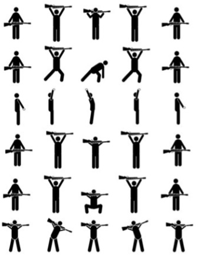

кацапа
кацапа
Мета сайту
В цоьму сайті я хотів зібрати докупи і систематизувати інформацію яка допоможе вижити і більш ефективно боротися з окупантом на головній сторінці ви знайдете базисні поради які вам пригодяться як основа з якої можна відштовхуватись.
Розділ перший готуйтеся заздалегідь
Розділ другий фізична підготовка
Як говорив Орест Лютий "тобі потрібно бути сильним й дужим бо пруть зі сходу москалі" саме тому повстанці мають надолужити гарт якомога швидче.

Проте неможливо негайно набути потрібну фізичну форму. Тіло мусить пройти через дві стадії. Перша — зміцнення. Приблизно два тижні триває процес «втома – відновлення». Щойно на другій стадії почина ється поступове покращення фізичних якостей. Кровообіг набуває потрібних параметрів, і тіло стає витривалішим. Найвищих показників форми досягають між 6-м і 10-м тижнями щоденних вправ. Далі слід лише підтримувати її, виконуючи стандартні вправи з підтягування, бігу та подолання перешкод.
Також буде дуже корисно виконувати додатковий пакет вправ зі зброєю aбо її масо-габаритним макетом як показано на картинці.Починайте виконувати кожну із запропонованих вправ з гвинтівкою по 5 разів, аби через кілька тижнів довести цю кількість до 50–75 разів. Додатково виконуйте стандартні вправи з підтягування, бігу та подолання перешкод. Ви набудете оптимальної фізичної форми протягом 6–10 тижнів щоденних вправ.